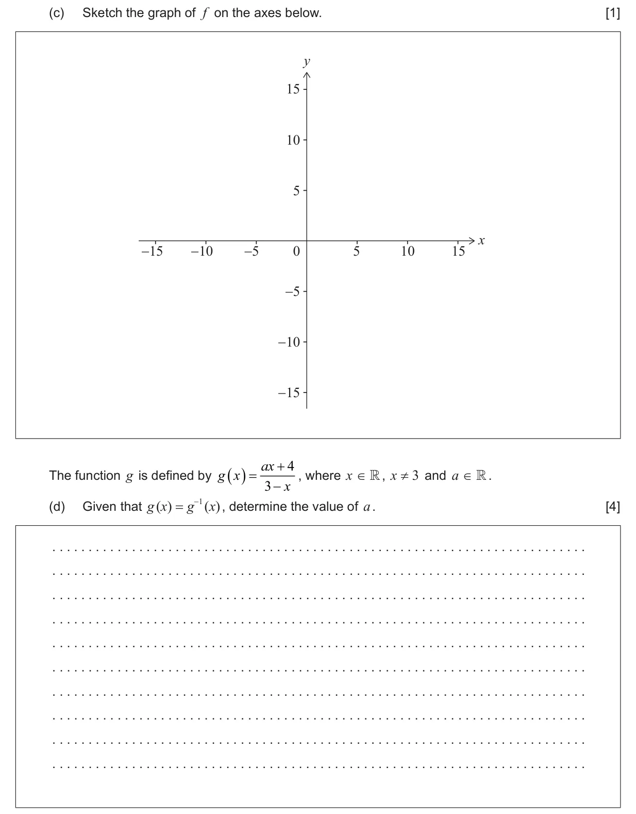
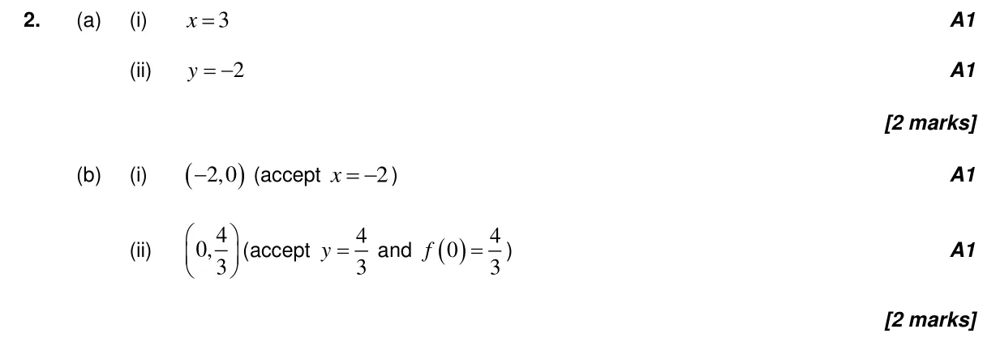
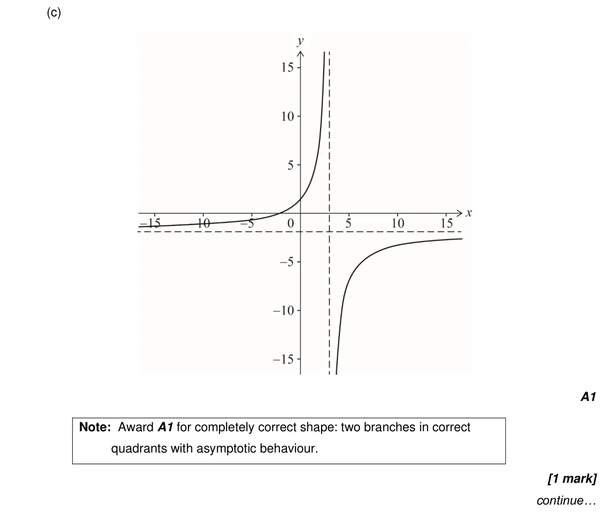
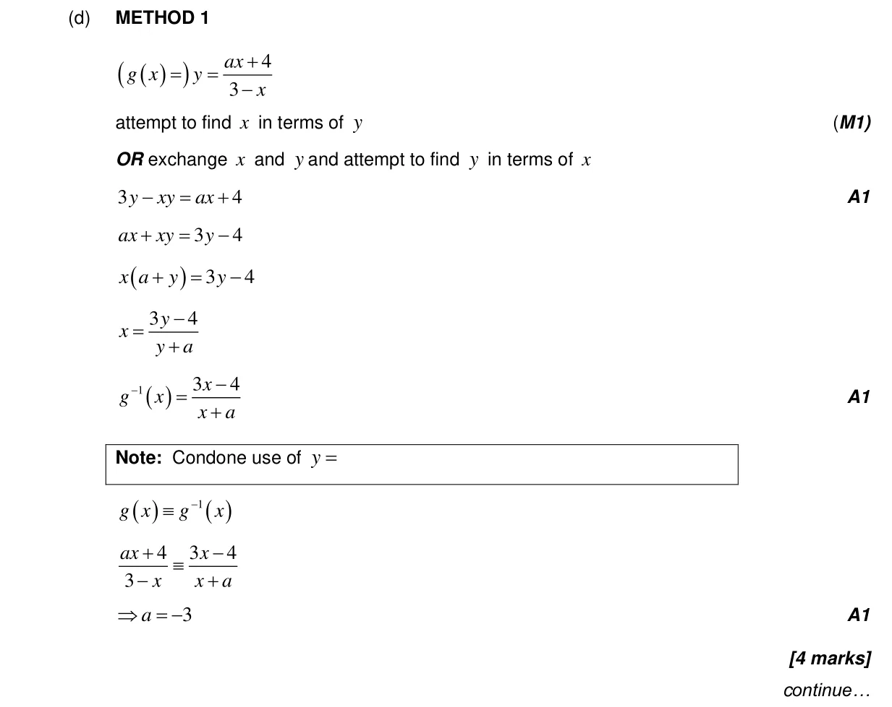
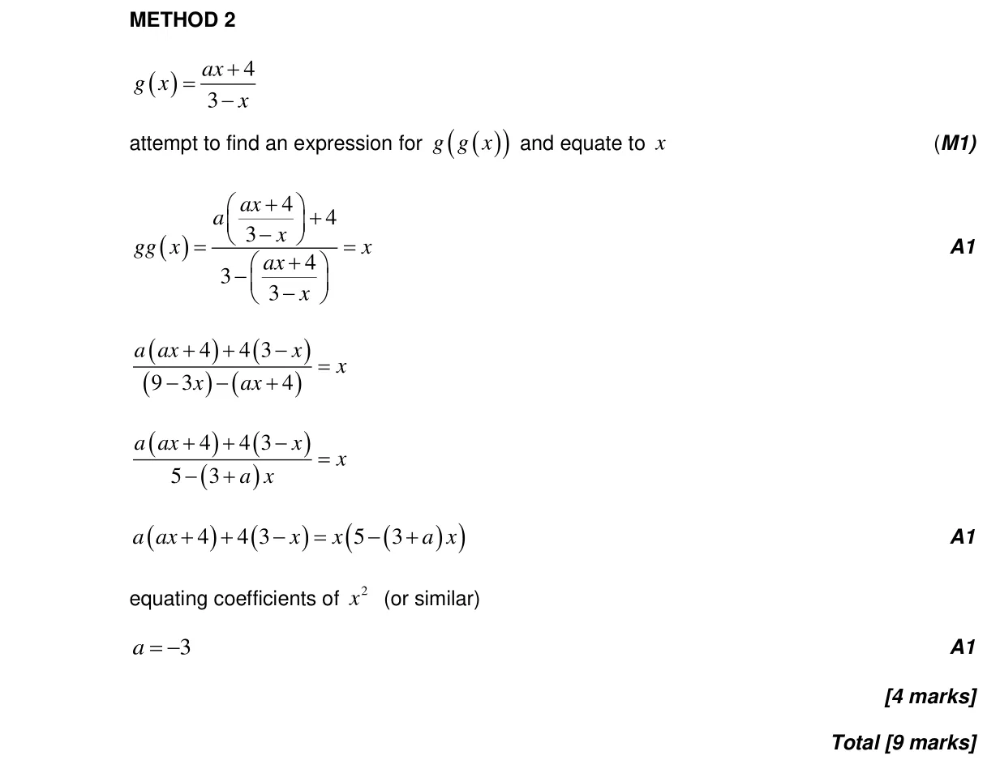

9 marks P1 TZ0 Section A No calculator 2.8 Reciprocal and simple rational functions, equations of asymptotes2.14 Odd and even functions, inverses with a restricted domain, self-inverse functions2.5 Composite functions, identity and finding inverse2.4 Key features of graphs2.3 Graphs of functions Question Hide breakdown abcd Markscheme 